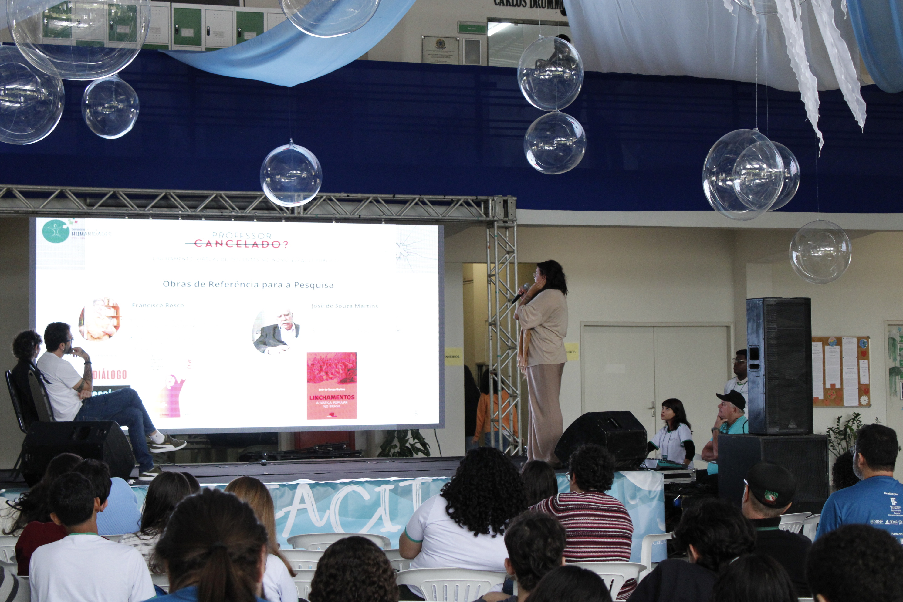
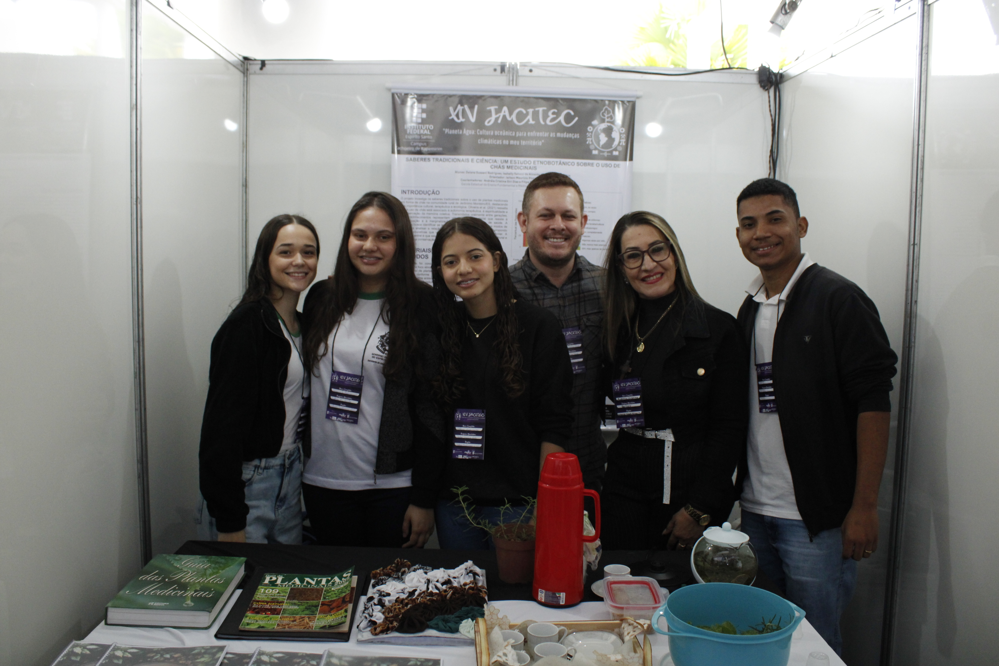

2022 · 11ª edição
Retorno das atividades presenciais após a pandemia.
O evento
A Jornada Acadêmica de Ciência, Tecnologia e Cultura — JACITEC do Ifes Campus Cachoeiro de Itapemirim é um evento de extensão cujo principal objetivo é divulgar as atividades de ensino, pesquisa e extensão desenvolvidas no campus para a comunidade interna e externa, além de promover a integração entre os participantes de diversas áreas. A temática abordada durante o evento segue o proposto para a Semana Nacional de Ciência e Tecnologia do ano vigente, abordando assim temas de relevância na atualidade.

A Jornada Acadêmica de Ciência, Tecnologia e Cultura (JACITEC) tem como objetivo compartilhar com as comunidades interna e externa as iniciativas que unem ensino, pesquisa e extensão no Ifes Campus Cachoeiro. Por meio de uma programação diversificada, construída pelos cursos técnicos, de graduação e pós-graduação, o evento promove a troca de saberes e a conexão de participantes de diversas áreas do conhecimento.
O evento engloba em sua grade as semanas de curso do Ifes Campus Cachoeiro de Itapemirim: o Seminário de Informática (SINF), a Semana de Estudos da Mineração (SEMIN) e a Semana da Engenharia Mecânica (SEMEC), reunindo estudantes, professores e pesquisadores de diferentes cursos em uma só programação.

Como parte do seu compromisso com a pluralidade do saber e a reflexão crítica, a programação da JACITEC
abriga espaços dedicados a debates acadêmicos focados em questões fundamentais da nossa sociedade. Nesta
edição, o evento sedia dois grandes encontros:
O Seminário de Humanidades do Ifes. Um espaço dedicado à reflexão crítica e ao
debate sobre as dinâmicas sociais, culturais e filosóficas contemporâneas.
Seminário de Matemática, Mulheres e Docência: Formação, Avaliação Externa e Diálogos sobre
Relações de Gênero. Este encontro promove debates cruciais sobre a representatividade, a
trajetória e os desafios das mulheres nas ciências exatas e na educação.
Desde sua criação em 2009, a Jornada Acadêmica de Ciência, Tecnologia e Cultura do Ifes Campus Cachoeiro de Itapemirim tem se consolidado como um espaço de integração entre ensino, pesquisa, extensão e cultura. Ao longo dos anos, cada edição buscou dialogar com temas nacionais e regionais, fortalecendo a produção científica e promovendo a troca de experiências entre estudantes, professores, pesquisadores e a comunidade externa.
Retorno das atividades presenciais após a pandemia.

Retorno da mostra de trabalhos de pesquisa e inovação.

"Ciências Básicas para o Desenvolvimento Sustentável".

Sediamos a Jornada de Integração do Ifes durante o nosso evento.

"Biomas do Brasil: diversidade, saberes e tecnologias sociais".

Início da classificatória para a Feira de Ciência e Inovação Capixaba.

"Planeta Água: a cultura oceânica para enfrentar as mudanças climáticas no meu território".

Consolidação da nossa mostra e aumento da participação Externa.
Assim, cada edição do evento representa um marco no compromisso do Ifes Campus Cachoeiro de Itapemirim com a difusão da ciência e o incentivo à participação cultural e social, reforçando a identidade de um evento que cresce a cada ano e se consolida como referência regional.
Este ano · 23ª SNCT
A XV Jornada Acadêmica de Ciência, Tecnologia e Cultura (JACITEC) acontecerá de 20 a 23 de outubro de
2026, ocupando os espaços de vivência e de aula do Ifes Campus Cachoeiro. Integrando a 23ª Semana
Nacional de Ciência e Tecnologia (SNCT), o evento deste ano traz para o centro do debate um tema
fundamental e urgente: "Ciência Delas".
Durante os quatro dias de jornada, a comunidade interna e
externa é convidada a reconhecer o potencial transformador da participação feminina, valorizando
referências em todas as disciplinas e desconstruindo estereótipos. A JACITEC 2026 reafirma o compromisso
do Ifes Cachoeiro com a pluralidade, a equidade e a inclusão, demonstrando que o futuro da inovação e o
desenvolvimento de uma sociedade mais justa dependem, essencialmente, de garantir que o lugar da mulher
seja exatamente onde ela quiser — inclusive, e com destaque, na Ciência, Tecnologia e Inovação.
Saiba mais!
Inscrições e Submissões
PRAZO PRORROGADO: submissão de projetos na Mostra Científica até 13/10/2026 (23h59)!
A inscrição prévia é essencial para a emissão de certificados e controle do evento. Para submeter projetos de pesquisa ou candidatar-se como avaliador na Mostra Científica, utilize a plataforma Projetin.
Exposição e patrocínio
A Jornada Acadêmica de Ciência, Tecnologia e Cultura do Ifes Campus Cachoeiro de Itapemirim é uma oportunidade única para empresas, instituições e organizações se conectarem com a comunidade acadêmica e o público em geral. Ao se tornar um patrocinador ou expositor, você terá a chance de divulgar sua marca, produtos e serviços, além de apoiar a disseminação do conhecimento científico e tecnológico.
A participação na JACITEC permite que sua empresa esteja presente em um ambiente de inovação e aprendizado, fortalecendo sua imagem institucional e ampliando sua rede de contatos. Além disso, você estará contribuindo para o desenvolvimento da ciência, tecnologia e cultura na região.
Empresas e instituições parceiras que já apoiam e fortalecem a XV JACITEC
Localização
Consulte a planta esquemática do Ifes Campus Cachoeiro de Itapemirim com a localização dos blocos e espaços principais.
Planta esquemática • sem escala